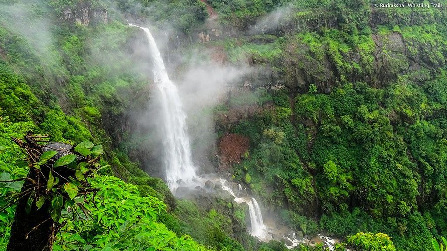
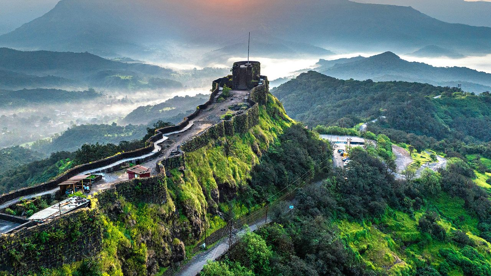
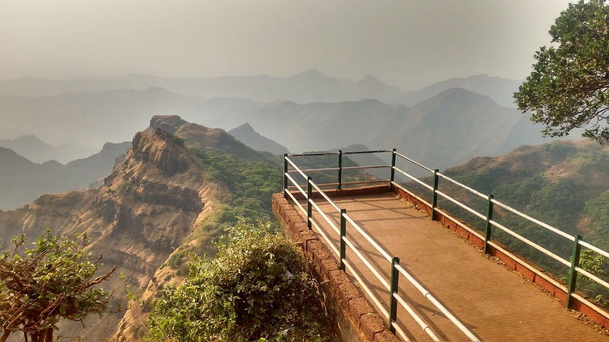
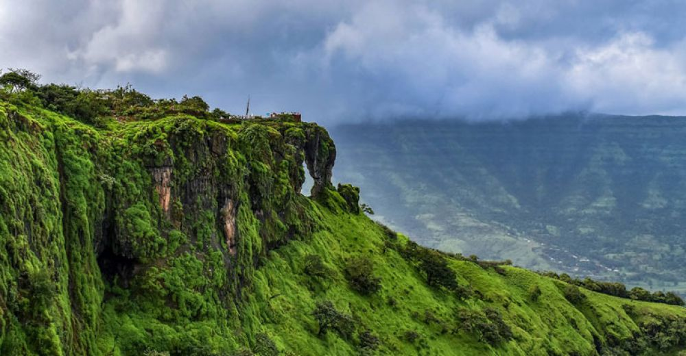
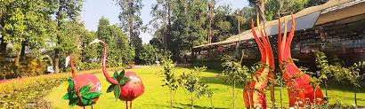
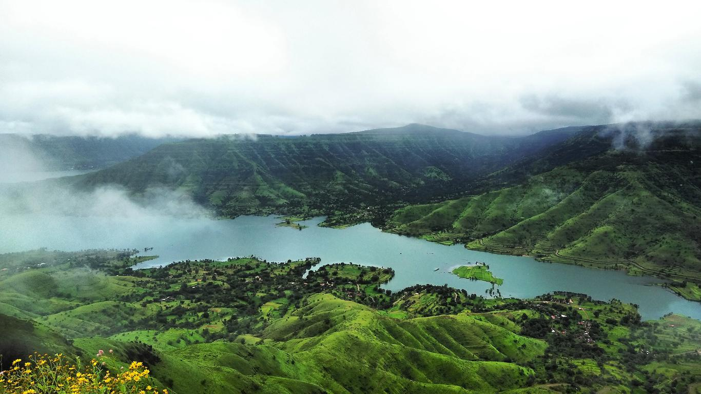
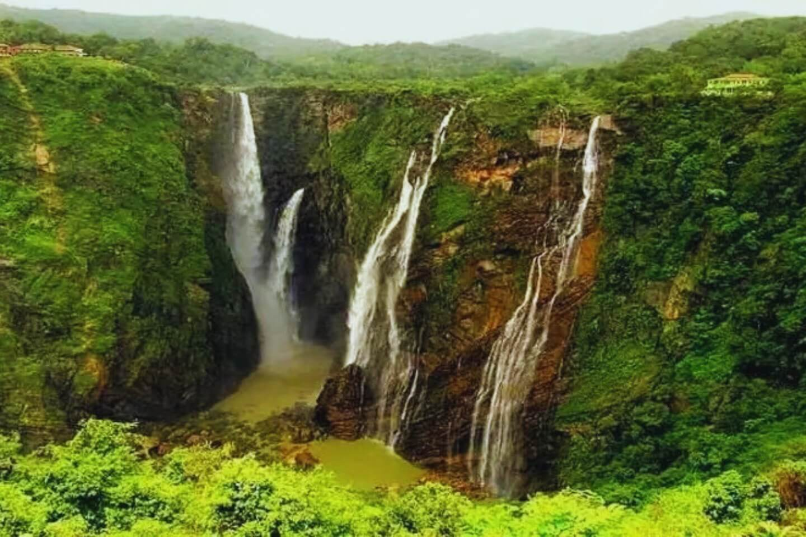
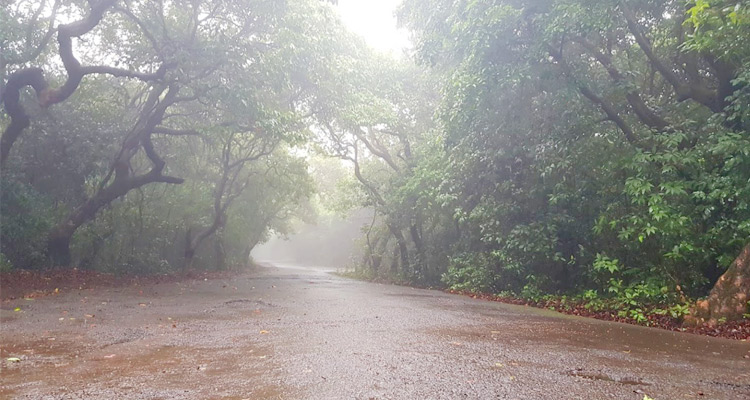

Lingmala Waterfall: A Natural Wonder
Lingmala Waterfall is a stunning waterfall located near Mahabaleshwar, known for its picturesque beauty and serene surroundings.
Fun Fact:
~It is one of the most popular waterfalls in the region, especially during the monsoon season!
Things to Explore at Lingmala Waterfall:
-
The Scenic Views:
Enjoy the breathtaking views of the waterfall cascading down the rocks.
-
The Trekking Trails:
Explore the trekking trails leading to the waterfall for an adventurous experience.
-
The Photography:
Capture stunning photographs of the waterfall and its surroundings.
-
The Picnic Spots:
Relax and unwind at the designated picnic areas near the waterfall.
-
The Wildlife:
Spot various bird species and other wildlife in the area.
Why Visit Lingmala Waterfall?
!Because it’s not just a waterfall, but a natural wonder that offers a perfect escape into nature’s beauty!

Pratapgad Fort: A Historical Marvel
Pratapgad Fort is a historic fort located near Mahabaleshwar, known for its rich history and stunning architecture.
Fun Fact:
~It was built in the 17th century by Chhatrapati Shivaji Maharaj!
Things to Explore at Pratapgad Fort:
-
The Fort Walls:
Walk along the fort walls and enjoy panoramic views of the surrounding landscape.
-
The Temples:
Visit the ancient temples within the fort complex, dedicated to various deities.
-
The History:
Learn about the historical significance of the fort and its role in Maratha history.
-
The Trekking Trails:
Explore the trekking trails leading to the fort for an adventurous experience.
-
The Local Cuisine:
Savor local delicacies available at nearby stalls and eateries.
Why Visit Pratapgad Fort?
!Because it’s not just a fort, but a historical marvel that offers a glimpse into the glorious past of Maharashtra!

Arthur Seat Point: The Queen of Points
Arthur Seat Point is a popular viewpoint in Mahabaleshwar, known for its breathtaking views of the valleys and hills.
Fun Fact:
~It is often referred to as the 'Queen of Points' due to its stunning vistas!
Things to Explore at Arthur Seat Point:
-
The Scenic Views:
Marvel at the panoramic views of the valleys, hills, and the Savitri River.
-
The Sunset:
Experience mesmerizing sunsets from this vantage point.
-
The Trekking Trails:
Explore the trekking trails leading to the viewpoint for an adventurous experience.
-
The Photography:
Capture stunning photographs of the landscape and the surrounding beauty.
-
The Local Cuisine:
Savor local snacks and refreshments available at nearby stalls.
Why Visit Arthur Seat Point?
!Because it’s not just a viewpoint, but a place that offers a perfect blend of natural beauty and tranquility!

Elephant Head Point: A Natural Marvel
Elephant Head Point is a scenic viewpoint in Mahabaleshwar, known for its unique rock formation resembling an elephant's head.
Fun Fact:
~It is one of the most photographed spots in Mahabaleshwar!
Things to Explore at Elephant Head Point:
-
The Scenic Views:
Enjoy the breathtaking views of the valleys and hills from this viewpoint.
-
The Rock Formation:
Marvel at the unique rock formation that resembles an elephant's head.
-
The Trekking Trails:
Explore the trekking trails leading to the viewpoint for an adventurous experience.
-
The Photography:
Capture stunning photographs of the landscape and the rock formation.
-
The Local Cuisine:
Savor local snacks and refreshments available at nearby stalls.
Why Visit Elephant Head Point?
!Because it’s not just a viewpoint, but a natural marvel that offers a perfect escape into nature’s beauty!

Mapro Garden: A Strawberry Paradise
Mapro Garden is a popular tourist attraction in Mahabaleshwar, known for its strawberry farms and delicious strawberry products.
Fun Fact:
~It is famous for its strawberry festival held every year!
Things to Explore at Mapro Garden:
-
The Strawberry Farms:
Visit the lush strawberry farms and enjoy strawberry picking.
-
The Mapro Store:
Shop for a variety of strawberry products, including jams, syrups, and chocolates.
-
The Restaurant:
Savor delicious strawberry-based dishes and beverages at the on-site restaurant.
-
The Scenic Beauty:
Enjoy the picturesque views of the gardens and surrounding hills.
-
The Kids' Play Area:
Let your kids enjoy the play area while you relax in the garden.
Why Visit Mapro Garden?
!Because it’s not just a garden, but a strawberry paradise that offers a delightful experience for all ages!

Panchgani: The Scenic Hill Station
Panchgani is a charming hill station located near Mahabaleshwar, known for its scenic beauty and pleasant weather.
Fun Fact:
~It is famous for its tableland, the second highest plateau in Asia!
Things to Explore in Panchgani:
-
The Tableland:
Enjoy the panoramic views from the tableland and engage in various outdoor activities.
-
The Waterfalls:
Visit the stunning waterfalls like Devkund and Lingmala.
-
The Adventure Activities:
Engage in paragliding, trekking, and horse riding for an adrenaline rush.
-
The Local Cuisine:
Savor local delicacies, especially the famous strawberry dishes.
-
The Scenic Beauty:
Marvel at the lush greenery and picturesque landscapes of Panchgani.
Why Visit Panchgani?
!Because it’s not just a hill station, but a perfect getaway for nature lovers and adventure enthusiasts!

Chinaman Waterfall: A Serene Escape
Chinaman Waterfall is a serene waterfall located near Mahabaleshwar, known for its tranquil surroundings and natural beauty.
Fun Fact:
~It is a hidden gem, often less crowded than other waterfalls in the region!
Things to Explore at Chinaman Waterfall:
-
The Scenic Views:
Enjoy the peaceful ambiance and stunning views of the waterfall.
-
The Trekking Trails:
Explore the trekking trails leading to the waterfall for an adventurous experience.
-
The Photography:
Capture beautiful photographs of the waterfall and its surroundings.
-
The Picnic Spots:
Relax and unwind at the designated picnic areas near the waterfall.
-
The Local Flora and Fauna:
Spot various plant species and wildlife in the area.
Why Visit Chinaman Waterfall?
!Because it’s not just a waterfall, but a serene escape into nature’s tranquility!

Babington Point: A Hidden Gem
Babington Point is a lesser-known viewpoint in Mahabaleshwar, offering stunning views of the surrounding valleys and hills.
Fun Fact:
~It is often less crowded, making it a perfect spot for peace and tranquility!
Things to Explore at Babington Point:
-
The Scenic Views:
Enjoy the breathtaking views of the valleys and hills from this hidden gem.
-
The Photography:
Capture stunning photographs of the landscape and the serene surroundings.
-
The Trekking Trails:
Explore the trekking trails leading to the viewpoint for an adventurous experience.
-
The Picnic Spots:
Relax and unwind at the designated picnic areas near the viewpoint.
-
The Local Cuisine:
Savor local snacks and refreshments available at nearby stalls.
Why Visit Babington Point?
!Because it’s not just a viewpoint, but a hidden gem that offers a perfect escape into nature’s beauty!